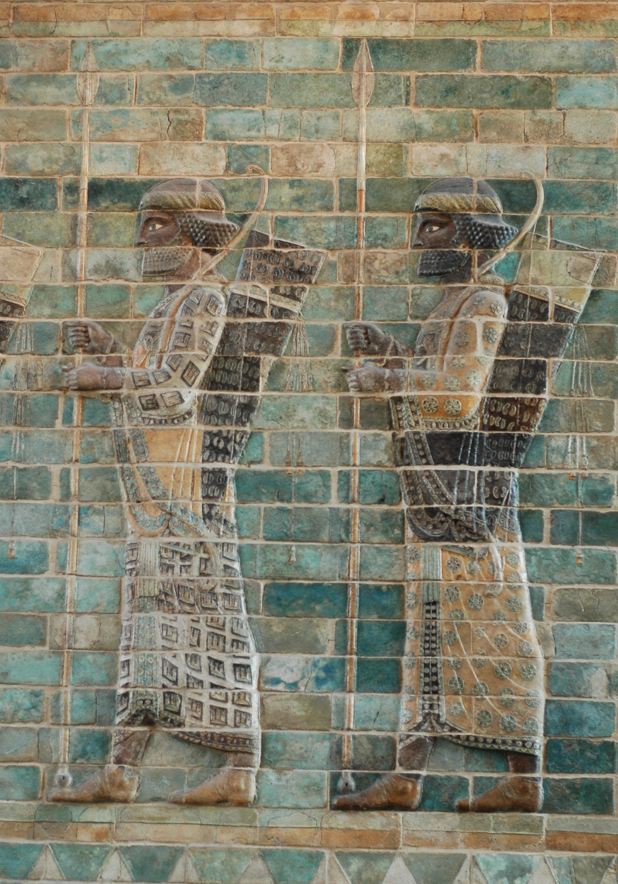

Frieze of Archers from Susa

- Find Name
- Frieze of Archers from Susa
- Description
- Glazed siliceous-brick panels from the palace of Darius I at Susa, made about 510 BC in the Achaemenid Persian period, excavated by Marcel and Jane Dieulafoy in 1885-1886 and now largely in the Louvre. Reconstructed into a procession of life-sized elite guards - the 'Immortals' - each figure about 17 bricks high, the frieze shows archers in patterned robes carrying spear, bow, and quiver. Though included in this Assyrian batch, it is Persian, not Assyrian: it belongs to the empire that succeeded Assyria and ruled Judah's world after the exile.
- Historical Period
- Persian
- Evidence Class
- Contextual
- Interpretations
- The frieze shows the splendor of the Persian court at Susa, the very palace where the book of Esther is set and where Nehemiah served as cupbearer. Its guards in procession are the visible power of the empire that let the exiles return and rebuild. It is Achaemenid art of Darius I's reign, a generation before Esther's Ahasuerus (Xerxes), so it sets the scene for Esther rather than illustrating its events.
- Alternative Names
- Archers' Frieze; Frieze of the Immortals
- Related Places
- Related Books
- Related Events
- Scripture Illuminated
- Biblical Significance
- It gives a face to the Persian court at Susa - the palace, the guards, the splendor - in which Esther, Mordecai, and Nehemiah lived and acted.
- Artifact Date
- c. 510 BC
- Current Location
- Louvre, Paris (some panels on loan elsewhere, including the British Museum)
- Date Discovered
- 1885-1886
- Discovery Location
- Susa, Iran (Apadana, palace of Darius I)
- Timeline Era
- Return and Second Temple
Awaiting Review Not yet checked against scholarly sources. Treat its claims as provisional until this entry is reviewed. About verification
Last reviewed: not yet reviewed